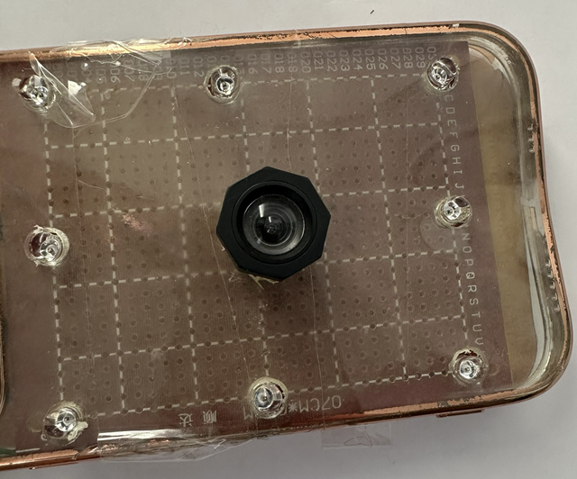
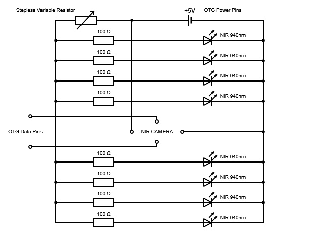
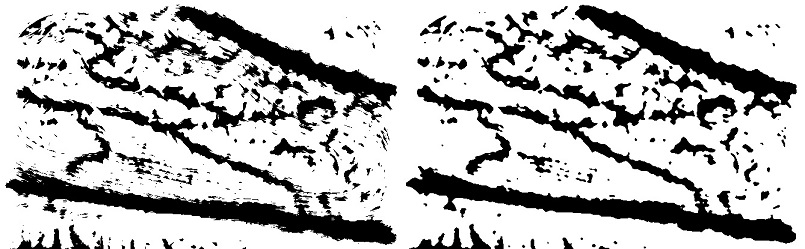
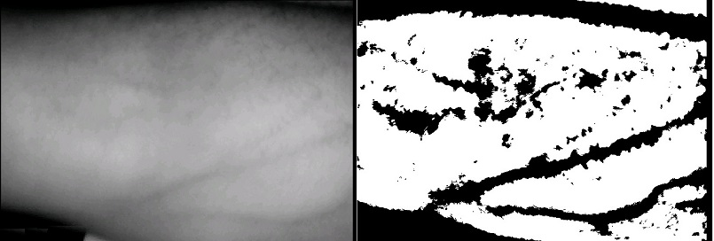
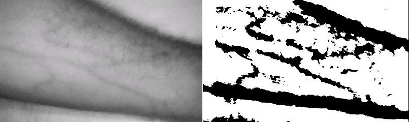
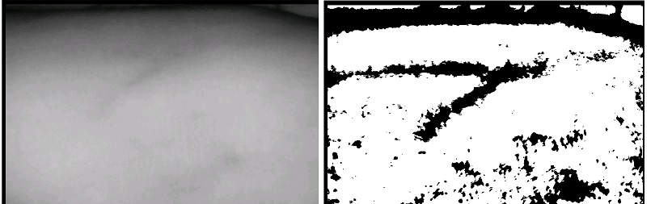
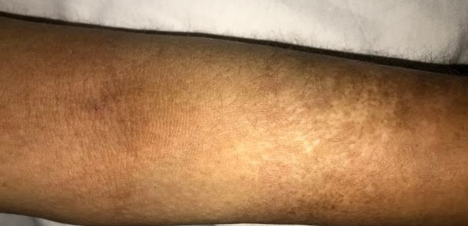
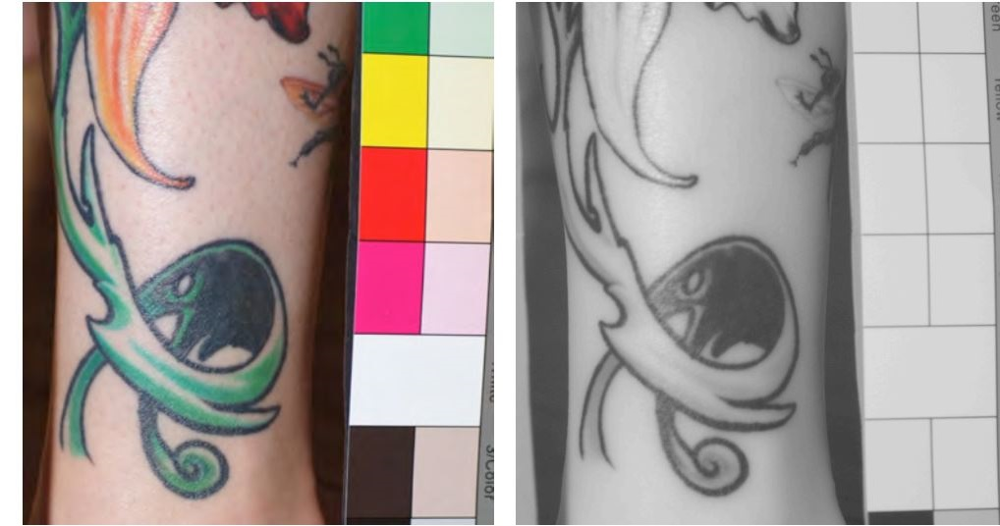

Real-time vein visualization captured directly through the MobileVeinViewer app, demonstrating NIR imaging and adaptive thresholding on a live subject.

Finding the right vein is a prerequisite for blood draws, IV therapy, and cannulation. Standard practice relies entirely on surface anatomy and operator experience — with success rates dropping below 50% in difficult patient populations.
On average, difficult patients require 3 needle sticks per vessel. Each failure increases the risk of bruising, nerve damage, and arterial puncture.
Patients with dark skin, high body weight, age-related changes, or conditions like scleroderma make visual identification nearly impossible.
Dedicated vein viewers exist and work well, but their advanced hardware makes them unaffordable for many clinics in developing countries.
Accidental arterial puncture, phlebitis, hematoma, and peripheral nerve damage are all documented complications of misplaced venepuncture.
MobileVeinViewer pairs a custom-built hardware extension with an Android application to deliver real-time vein visualization anywhere a smartphone can go.
| NIR LEDs | 8 × SD-AR512C9, 940 nm, 40 mA each |
| Camera | Modified webcam (IR-Cut → IR-Pass filter) |
| Connection | USB OTG cable — data + power (≤ 500 mA) |
| Control | Stepless variable resistor for LED brightness |
| Total cost | < €30 |

Why 940 nm? NIR light at this wavelength penetrates the epidermis but is strongly absorbed by oxyhaemoglobin in red blood cells. Surrounding tissue reflects it — creating a high-contrast dark pattern exactly where the veins are.
The app receives the NIR video stream via a UVC camera library and runs each frame through an OpenCV-powered C++ image processing pipeline via Android JNI — all in real time.
Safety: An accelerometer-based alarm triggers if the device is flipped upside down, preventing direct NIR LED exposure to eyes.
The system was validated on subjects with normal skin, tattooed skin, varying skin tones, and challenging medical conditions. Click any image to enlarge.
Raw NIR image showing clear vein structure with no image processing applied. Veins appear as dark channels against the lighter surrounding tissue.
Same setup, lower vein contrast in raw NIR mode — illustrating why adaptive thresholding is necessary for reliable clinical use.

Before/after comparison: Gaussian adaptive thresholding (left) vs. with median blur applied (right). Noise is eliminated while vein structure is fully preserved.

Raw NIR image alongside the adaptive thresholding result on a high-melanin skin. Veins remain well-visualized — one of the key clinical advantages.

Raw NIR and processed result on lighter skin. Strong contrast achieved, confirming the system performs consistently across the full skin tone spectrum.

Result on a 56-year-old patient with advanced scleroderma — a condition so severe that venepuncture previously required 3–5 failed attempts each visit. Veins are clearly visualized with adaptive thresholding.

Visible-light image of the scleroderma patient's arm. No vein is identifiable. A needle puncture mark from a prior failed attempt is visible on the hardened skin.

Comparison of visible light vs. NIR imaging on tattooed skin. NIR light penetrates most ink colours (green, red, orange), enabling vein visualization through the tattoo.
USB Camera (UVC) ──► libuvccamera (JNI / libuvc) ──► UVCCameraHandlerMultiSurface
│
┌───────────────┴───────────────┐
▼ ▼
UVCCameraTextureView ImageProcessor
(live preview) (OpenGL → JNI / OpenCV C++)
│
▼
SurfaceView result
(vein-enhanced image overlay)
This project was developed as a Master's thesis in Informatics at the Technische Universität München, Department of Informatics, under the supervision of Prof. Dr. Uwe Baumgarten. The full thesis covers the underlying physics, hardware design, image processing methodology, and clinical validation in detail.